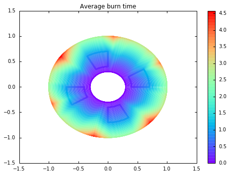
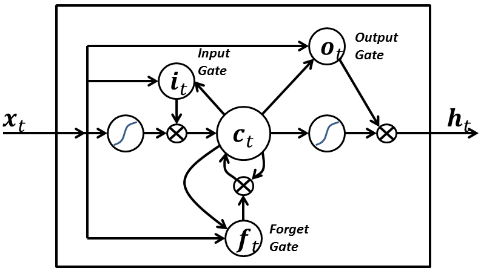

Stuff I'm Doing
Cognitive Strategies for Design Automation
- How do design automation experts decide how to integrate computers in their design process?
- What are the challenges and observations that motivate their decision process?
- Where can we share ideas, approaches and solutions between architecture and engineering?

- Limitations: What are the implicit limitations a particular design tool places on the design space?
- Use upper and lower bounds extensively, to operate at a higher level of abstraction
- Work up from component libraries, so limitations are explicit and motivated by reality
- Have the designers manually find bounds on the spaces
- Discovery: finding the right software, discovering how to use it, locating input data and models, etc.
- Crowdsourcing
- Hiring experts
- Use crowdsourcing to train computer models
- Build your own software
Just enough AI Machine Learning to be dangerous
Probabilistic Programming
We have a bunch of observations, $\theta_n$
Is it raining at Tanah Merah?
Is it raining at Pasir Ris?
Is it raining at Changi Airport?
These observations are incomplete
We don't directly measure wind patterns, humidity, etc.
All of machine learning is estimating $P(X|\theta_{0..n})$
If we know it's raining in Pasir Ris and Changi, how likely is it to rain on campus in the next 5 minutes?
Tables vs. Graphs
|
Bayes' Theorem
$$P(X|\theta) = \frac{P(\theta|X)P(X)}{P(\theta)}$$As we collect data, our guess for $P(X|\theta)$ gets more accurate
This is a hierarchical Bayesian model
You collect observations to "fit" the probability distribution of each node
The less flexibility in your model, the less data you need
Probabilistic Programming
- Our model is probability distribution, from which we can draw samples
- We can generalize beyond a DAG
- You've probably done this before...
Probabilistic Programming
- Generally, we make a probabilistic program with some free parameters
- We estimate the output distribution of the program
- Then we use an optimizer to tweak the free parameters so the distribution is likely to produce our data!
- Example: Regression
Why do we care?
- We can build complex models that are hard to translate into existing ML structures
- This lets us use less data and training time, by integrating our expert knowledge!
- Lots of existing research, libraries and languages for building distributions and estimating the output
|  |

|
How do you use it?
- Church LISP-y, made for cognitive science, designed to be easy to model "human" cognition, VERY alpha-state
- PyMC3 Library for python, handles DAGs easily and efficiently
- WebPPL Subset of javascript, probably the best for general usage
Neural Networks and Computational Graphs
We can view these techniques as computational graphs

Traditional neural networks
- Each layer has a weight matrix $W$ which scales and sums the outputs of the previous layer
- In probabilistic programming terms, these $W$s are the part we optimize
- Things we don't change during training are called hyperparameters
Each neuron has a non-linear response to the weighted sum
How does our neural network adapt to this problem?

| ➔ |
| ➔ |
| ➔ |
| ➔ |

|
Can our neural network deal with this?
How could we make it work?
Deep learning
Just has a lot of big layers ¯\_(ツ)_/¯
Convolutional Neural Networks
During training, we tweak convolutional kernels that capture key features of our 2-D data

|

|
https://ujjwalkarn.me/2016/08/11/intuitive-explanation-convnets/
Long Short Term Memory
Each neuron has a feedback loop, so it can remember previous examples
By BiObserver - Own work, CC BY-SA 4.0, https://commons.wikimedia.org/w/index.php?curid=43992484
Autoencoders
http://blog.fastforwardlabs.com/post/148842796218/introducing-variational-autoencoders-in-prose-and
How do we examine the hidden layer?
http://blog.fastforwardlabs.com/post/148842796218/introducing-variational-autoencoders-in-prose-and
We can watch it learn :)

|

|
http://blog.fastforwardlabs.com/post/148842796218/introducing-variational-autoencoders-in-prose-and
My Plan
Have lots of descriptions of "good" design software, and train the system to produce text with similar product features
Treat design principles as conditional probabilities over sets of features, and hope the latent space picks up on that
How do you use this stuff?
Start by thinking about it probabilistically
What is your $X$? What are your $\theta$s?
- What features are you trying to predict from new observations?
- Do you have a source for data with the "correct" predictions already?
Should you use probabilistic programming?
Does your statistical model have a lot of known structure/dependence?
- If it has feedback between variables, use WebPPL
- If it doesn't, use PyMC3
Consider the problem geometrically
- How many dimensions are in the input and output?
- How do you turn your data into vectors?
- How dense does your data need to be?
Use Tensorflow
Fast, lots of examples, backed by Google
- If you have dense, 2D data, use a CNN
- If you have sequential data, use an LSTM
- If you want to discover latent variables or generate new examples, use a GAN or Autoencoder
- Get a lot of data
- Convert it to a vector
- Visually inspect some plots of the data to look for patterns or problems
- Train your ML system on 80% of the data
- Check its performance on the other 20% of the data
- Use t-SNE to look at clusters in the output. Do they seem sensible?
- If not, play with the hyperparameters
Links!